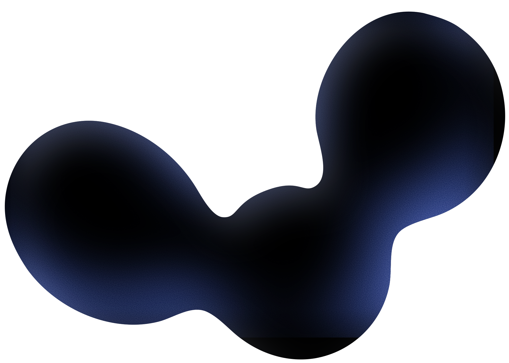

Recommandation stratégique & opérationnelle pour le futur site Client

Programme partenaire
Transformer son réseau
en valeur concrète
Programme partenaire
Transformer son réseau
en valeur concrète
Notre approche
Des sites conçus pour faire travailler les entreprises B2B.
Nos clients ont une offre solide et un site en retard sur leur niveau. On commence par le fond (positionnement, message, structure de l’offre) avant de concevoir quoi que ce soit.
Recommander Orem, c’est recommander quelqu’un qui livre.
Programme partenaire
Transformer son réseau
en valeur concrète
Ce que nous avons compris du projet
Le client entre dans une nouvelle phase, où le site doit permettre de :
Commission cash
- 12 % sur les 2 premiers deals
- 17 % à partir du 3e
Versé dès encaissement du premier paiement client
Production offerte
- 2 mois d’accompagnement offerts
Utilisables pour faire évoluer le site de ses propres clients
Avantage sur son site
- 25 % de réduction sur la refonte
Un retour direct sur son image
Une introduction.
Orem gère le reste.
Étape 01
Identification
Une entreprise du réseau correspond au profil cible.
Étape 02
Mise en relation
Un email d’introduction suffit. Orem prend le relais.
Étape 03
Orem gère
Qualification, devis, signature, encaissement.
Étape 04
Récompense
Deal validé, la récompense est sélectionnée et activée.
Les chiffres parlent d’eux-mêmes.
dès la première semaine
“Je vous présente Louis, le boss pour les sites et la meilleure personne pour vous aider.”
Prénom Nom — Entreprise
“On préfère refuser un projet que livrer quelque chose qui ne correspond pas.”
Orem
Accompagnement
post-livraison
| Chantier | Client | Orem |
|---|---|---|
| Architecture | Validation | Conception |
| Direction artistique | Retours | Production |
| UX design | Ateliers | Animation |
| Développement web | — | Webflow |
| SEO / GEO | Mots-clés | Stratégie |
Le chemin critique dépend autant de la production que des validations client.
Une introduction,
Orem gère le reste.
Identification
Une entreprise du réseau correspond au profil cible.
Mise en relation
Un email d’introduction suffit.
Récompense
Deal validé, la récompense est activée.
Orem gère
Qualification, devis, signature.